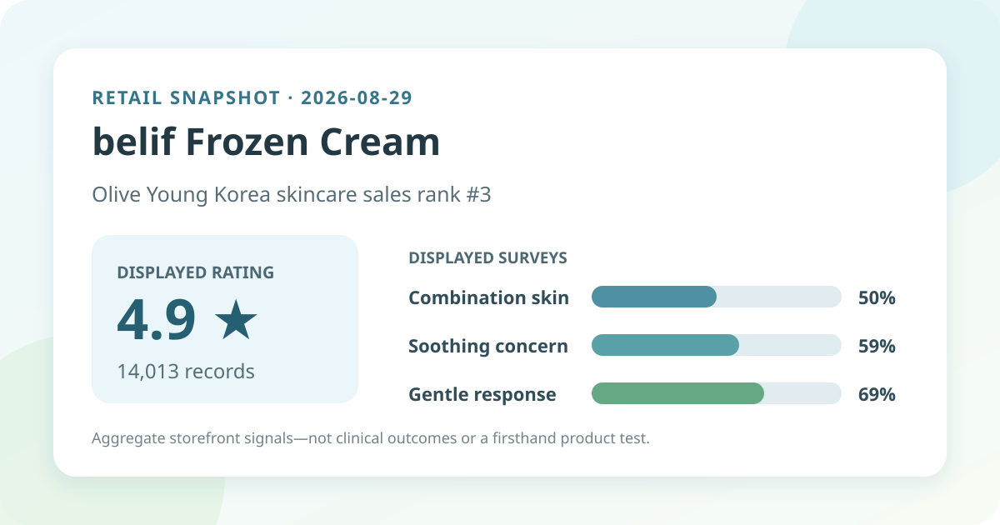
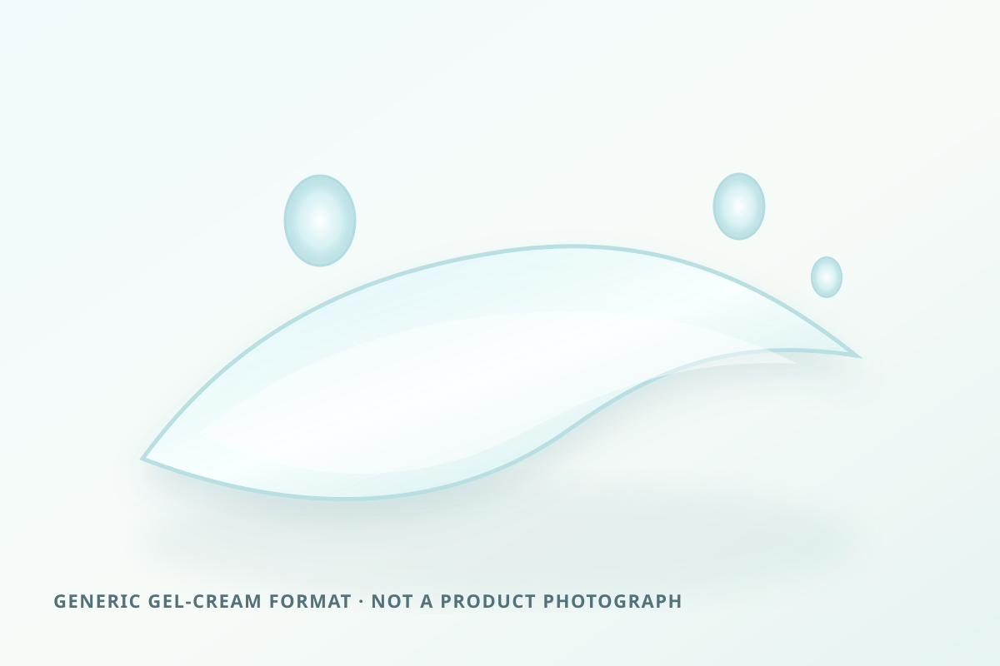

Data captured August 29, 2026. This article uses only the retailer's displayed product title, sales rank, aggregate rating, review count, survey shares, anonymous automated summary themes, and dated price display. No individual review, reviewer name, product photograph, or user photograph is reproduced or translated. I did not test the product.

The short version: belif Frozen Cream ranked third in the captured Olive Young Korea skincare sales list and displayed 4.9 out of 5 from 14,013 review records. Its survey panel showed combination skin 50%, soothing concern 59%, and a gentle response at 69%. The retailer's anonymous automated summary classified 82% of recent feedback as positive and grouped discussion around a cooling sensation, makeup preparation, and a light gel-like feel. These are shopper signals, not measured skin-temperature or treatment effects.
The narrow conclusion is strongly positive: within Olive Young Korea's rating system, 14,013 linked records averaged 4.9 on capture day. That is a substantial feedback base and makes the displayed average less vulnerable to movement from one additional rating than a new listing with only a few records.
Volume does not remove selection effects. The people who buy, receive a promotion, choose to review, and remain linked to a listing are not a random sample of everyone who might use the cream. Retailer campaigns, gifts, seasonal demand, option changes, and moderation or linking rules may influence which experiences enter the pool.
The page did not expose a reliable five-, four-, three-, two-, and one-star distribution. A one-decimal average can come from different mixtures of scores and may be rounded. This analysis therefore does not turn 4.9 into an invented five-star share or speculate about where lower scores sit.
This was the leading displayed skin-type response. It describes representation in the survey, not a product-fit score.
This identifies the leading concern response. It is not a measurement of redness, irritation, inflammation, or skin temperature.
This is a subjective response, not a safety test, allergy assessment, or guarantee for reactive skin.
The three percentages answer different prompts and should not be combined into one score. The page did not display a separate denominator for each survey, so it would be unsafe to assume that all 14,013 review records supplied every answer. Poll wording, response choices, and participation can also differ across listings and capture dates.
The retailer displayed an automated summary stating that 82% of recent feedback was positive. It grouped discussion around a noticeable cooling sensation, use before makeup, and a light gel-like moisturizing feel. These categories can help shoppers decide what to examine during a sample or patch test, but they are not instrument readings or controlled comparisons.
This post does not reproduce or translate any underlying review, name, or photograph. It also does not treat the summary wording as verified performance. Automated grouping can flatten disagreement, omit context, and make repeated marketing language look more settled than it is. “Cooling” may describe subjective sensation; it does not prove a durable reduction in skin temperature or a medical soothing effect.

The listing calls the item a cream, while the anonymous summary grouped language around a light gel-like feel. I did not open, apply, or compare the formula. Color, scent, viscosity, spread, cooling duration, absorption time, tack, residue, pilling, and compatibility with sunscreen or makeup therefore remain unverified.
The local illustration deliberately avoids product colors, logos, packaging, and photographic imitation. It communicates only a general gel-cream format. If finish matters, test the actual product with the amount, waiting time, sunscreen, makeup, humidity, and climate in which it will be worn.
Rank three indicates current sales prominence inside Olive Young Korea's skincare ranking at one captured moment. It does not mean third-best for combination skin, third-most hydrating, third-most gentle, or third-most effective. The listing carried a cooling-cream label, a 1+1 promotion, a gift, and a discount, each of which can affect visibility and buying momentum.
Sales rank and review score answer different questions. Rank describes commerce in a particular retailer and period; the score summarizes feedback attached to the listing. Neither measures a biological effect, and neither substitutes for checking the selected option, current package, directions, and individual tolerance.
The captured Korean listing displayed a ₩33,000 reference price and a sale price starting at ₩26,400. Its title described a 50 ml 1+1 configuration plus a hand-mirror gift, and the page displayed a basis of ₩26,400 per 100 ml. These are dated storefront figures, not a permanent price guarantee.
Before comparing value, confirm the option currently selected, total volume, whether the second unit and gift remain included, coupon rules, seller, shipping, returns, expiry information, and checkout total. A promotional double set can improve the displayed unit price while increasing the quantity a first-time buyer must commit to. Regional listings may differ in name, pack, label, formula, and seller.
The English working name follows the Korean listing's belif Frozen Cream wording. “Frozen” and the retailer's cooling label are product-positioning terms, not a certificate of measured temperature change. This analysis does not infer a mechanism, duration, or clinical magnitude from the name or anonymous themes.
I did not independently capture and reconcile the complete current ingredient list across regions. This post does not claim that the cream is fragrance-free, alcohol-free, essential-oil-free, non-comedogenic, pregnancy-compatible, or appropriate for acne, eczema, rosacea, allergy, broken skin, or another medical concern. Check the package for the exact market and item received.
When a known allergy, active prescription, skin condition, or prior serious reaction makes the decision higher stakes, qualified guidance is more appropriate than a retail average. Introducing one product at a time and trying a small area may make an unwanted response easier to identify, but neither step guarantees safety.
It is a strongly positive retailer average across 14,013 linked records. Without a reliable star distribution or representative sampling, it should not be converted into a stronger claim.
Combination skin led the displayed poll at 50%. That describes who was represented, not who will benefit most.
No. It is a selected concern in a retail survey, not a temperature reading, before-and-after measurement, or clinical endpoint.
No. It is a subjective response without a separately displayed poll denominator, not a safety assessment or individual prediction.
No. It is a generic code-drawn gel-cream-format visual, not a product photograph, user image, or firsthand test.
belif Frozen Cream was the highest-ranked valid unpublished candidate after two Anua PDRN Capsule 100 Serum configurations were skipped as already covered. The ranking and product titles matched, and the product header and review panel agreed on 4.9 stars and 14,013 records.
The defensible reading is that the listing had strong sales visibility and broadly positive shopper feedback, with combination-skin, soothing-concern, and gentle-response signals worth noting. Missing star distribution, unknown survey denominators, self-selection, promotion effects, and the limits of automated summaries prevent claims about cooling performance, treatment, safety, or personal fit.
← All reviews · Rankings · Skin-poll guide · Methodology
Published by The K-Beauty Data Desk · Aggregate data captured 2026-08-29. No individual review, name, product photo, or user photo is reproduced or translated, and I did not test the product. I received no free product and am not paid or approved by the brand. Check the dated source listing.
Data basis: the live Olive Young Korea skincare sales-ranking and product/review screens captured 2026-08-29. Product title, rank, rating, review count, price display, survey shares, and anonymous automated themes are source facts. Interpretation and cautions are editorial.